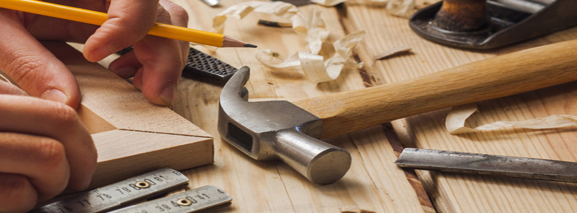

Los origenes de nuestra empresa se remontan a 1971, en Tuxtla Gutiérrez, Chiapas, con David Soancatl Betnazos y
Alberto Rodríguez Pérez, dos exempleados de El Roble (una tienda de ferrtería).
Durante un descanso en el trabajo, ellos soñaron con Carpintero Moderno: imaginaron una ferrtería que
ofrecería una gran variedad de productos, a excelentes precios y con un personal altamente capacitado. Entonces,
decidieron comenzar a trabajar para hacer su sueño realidad y, después de cinco años, por fin tuvieron listo el proyecto, así que
renunciaron a sus empleos para realizarlo.
Después de la apertura de las dos primeras tiendas Carpintero Moderno, en Tuxtla Gutiérrez, en 1978, los almacenes de 5,000 metros
cuadrados, empequeñecieron a la competencia con más artículos, que cualquier otra ferretería.
Pero el corazón de Carpintero Moderno, eran los asociados de pisos, capacitados por expertos que podían enseñar a
los clientes, cómo manejar una herramienta eléctrica, cambiar la válvula de llenado, u otras cosas similares. No
era suficiente vender o incluso decir: los asociados también tenían que poder mostrar. Pronto, Carpintero Moderno
comenzó a ofrecer talleres para clientes y sesiones individuales con clientes.
David y Alberto, implementaron una "carta de derechos" para el cliente, que establecía que los clientes siempre
deberían esperar la mejor variedad, cantidad y precio, así como la ayuda de un asociado de ventas capacitado,
cuando visitan una tienda de Carpintero Moderno.
Con el paso de los años y con el surgimiento de nuevas tecnologías, la empresa se vio en la necesidad de
reinventarse; había que evaluar la manera en que veíamos estas tecnologías emergentes y el proceso de
distribución de nuestros productos: cómo podríamos brindar máquinas y herramientas de vanguardia que
hicieran más productivos a nuestros usuarios y cómo podríamos hacerlo rápidamente.
Con un enfoque renovado en los consumidores finales, nos dispusimos a proporcionar una
innovación integradora. De esta forma, nuestro equipo se dispuso a proporcionar
esta innovación integradora mediante la salida al lugar de trabajo, al lado de los profesionales,
para comprender las dificultades a las que se enfrentan desde que se levantan en la mañana hasta la hora en que
se van a acostar en la noche.
Teniendo esta idea en mente, decidimos invertir tiempo para trabajar codo a codo con usuarios reales para
comprender las demandas de un lugar de trabajo que cambia constantemente y de qué mejor manera podemos brindar
soluciones para un lugar de trabajo más seguro y productivo. Mediante una evaluación exhaustiva del trabajo a
realizar, las frustraciones, las necesidades y las limitaciones previas, nos dispusimos a replantearnos
completamente una solución y proporcionar la innovación que se ha visto en todaos nuestros catálogos de productos.
Con esta mentalidad y enfoque constante, comenzamos nuestra revolución interna: un período
que continúa hasta el día de hoy y que nos ha permitido desprendernos de lo que se esperaba de nosotros como
una “una simple tienda de distribución de productos de carpintería” para así convertirnos en solucionadores progresivos de problemas
en múltiples categorías de herramientas y accesorios.
Así, desde aquella idea de David Soancatl Betanzos y Alberto Rodríguez Pérez hasta el día de hoy, Carpintero
Moderno SA. de CV. ha liderado el mercado en la venta y distribución de productos selectos e innovadores que
brindan productividad incrementada y durabilidad sin igual para los usuarios profesionales de la carpintería.